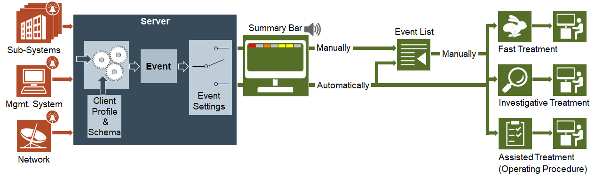

Alarms

This section provides reference and background information about alarms in Desigo CC.
An Alarm is a situation that the operator either needs to be aware of, or needs to respond to. When an alarm is acquired or generated in the management station, it is processed as an Event according to the system settings.
For instructions, see the step-by-step section.